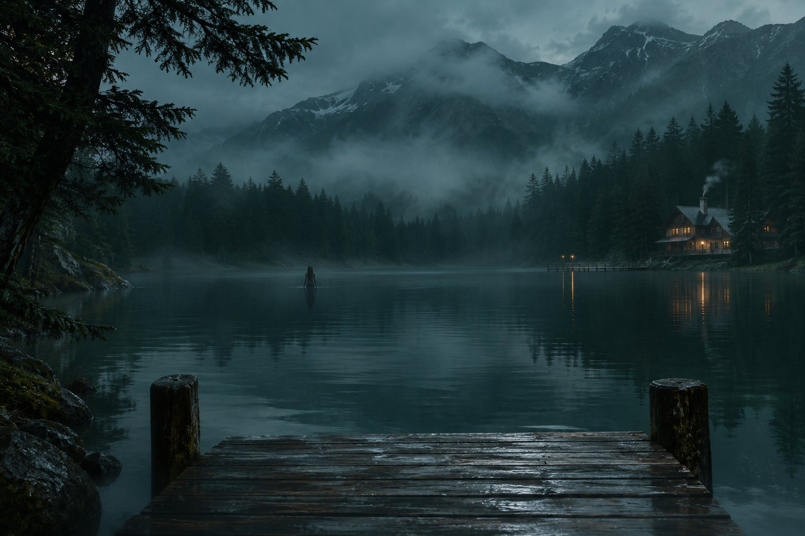

湖景客房
羊毛毯、深窗台和一扇正对湖面的窗。
旅馆只有八间客房。房间朝湖，窗下是木栈道。白天沿岸散步，回来可以在壁炉边读书，或者等一场雨。
羊毛毯、深窗台和一扇正对湖面的窗。
自制果酱、热面包，早上七点半开始供应。
从前门步行十分钟，便可到旧渡口。
“我们住在二楼。早上拉开窗帘，湖上的雾还没散。下次想多住两晚。”

过桥后左转，贴着湖边走到第二盏路灯。路灯亮的时候，可以看见屋顶。
傍晚起雾，旧渡口有时会在湖面上照出另一盏灯。认岸上的那一盏。
前台值班到晚上十点。迟到的客人可以从侧门进来，在柜台上找自己的姓名和房号。
钥匙已经放出来了。今晚有一把没挂房号。
电话接通时，对面先传来一声很轻的敲击。留言的时间是明天凌晨。
灯下面，站着一个人。